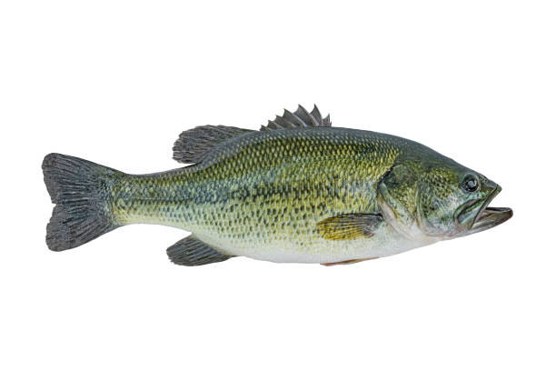

Popularity
Largemouth bass are one of the top recreational fish species in the United States.
As a result, they have been stocked throughout the U.S. to provide recreational fishing opportunities outside of their native range.
Largemouth bass are primarily managed by recreational fishing regulations
which normally delineate fishing seasons, by creel limits, and size limits.
Natural History
Largemouth bass spawn in the spring.
Male largemouth bass, when preparing to spawn will fan or spread out a nest to help protect the eggs when they are fertilized.
When the eggs hatch the fry will remain in the nest for protection.
When the fry reach 1.5 to 2 inches (5.08 cm) in length they will begin to feed on insect larvae and smaller fishes.
Range
The range of largemouth bass within North America extend
from the St. Lawrence River, the Great Lakes, Hudson Bay (Red River)
and into the Mississippi River basin. Largemouth bass are also found in
Atlantic drainages from North Carolina to Florida and into northern Mexico.
Habitat
Largemouth bass inhabit clear, vegetated lakes, ponds, swamps, and the backwaters of pools,
creeks and rivers. Largemouth bass prefer spawning areas with a firm bottom of sand,
mud or gravel. Adult largemouth bass utilize submerged aquatic vegetation as cover to
ambush prey and juvenile or young largemouth use aquatic weeds, tree limbs or
submerged log or stumps as cover to escape predation. Dissolved oxygen is
an important hydrological condition essential to largemouth bass habitat.
Diet
Adult largemouth bass feed on fish, crayfish and frogs. Young largemouth bass will feed on crustaceans,
insects, and small fish. Some largemouth bass can be cannibalistic just like northern pike. Largemouth bass
normally do not feed during spawning or when the water temperature dips below
5 degrees Celsius (41 degrees Fahrenheit) or above 37 degrees Celsius (98.6 degrees Fahrenheit).